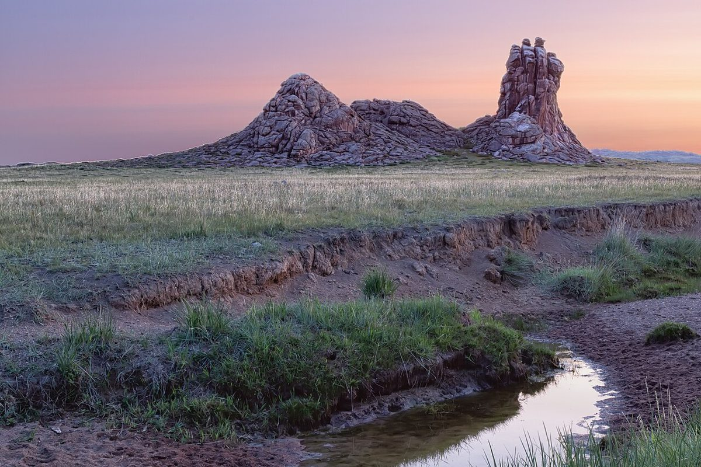

店のこと
店のこと
確認できているのは、店名・所在地・電話番号・Instagramのアカウントだけです。
「想像してみる」の部分は制作側が想像して書いたものです。お店の実際の様子・考え・メニューとは関係がありません。
確認できていること
- 店名は「美山珈琲」、業種はカフェ
- 所在地は京都府南丹市美山町安掛寺ノ下8−３(〒601-0722)
- 電話番号は090-6755-3552
- Instagramのアカウントは @miyama_coffee
- 営業時間・定休日・メニュー・価格・ご予約・駐車場は準備中

想像してみる
「山」の字から
店名の由来は分かりません。制作側は「山」の字から、山並みを遠くから近くへ見ていくような読み方を思いついたため、このページの背景を淡い色から濃い色へ重ねています。お店の考えとは関係のない、制作側の連想です。
